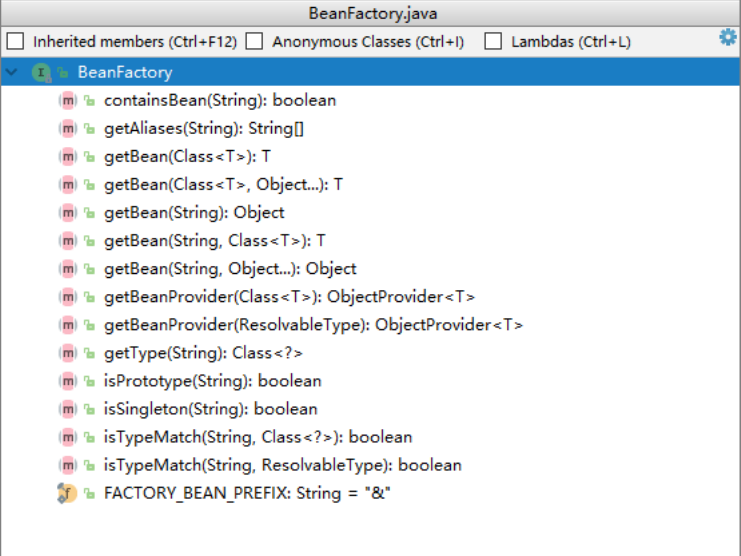
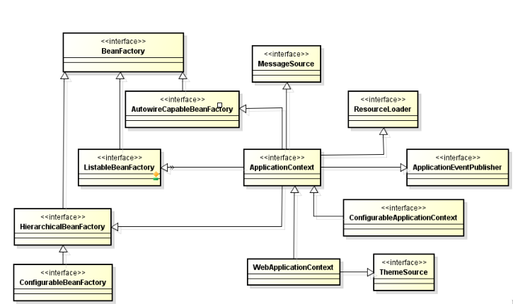
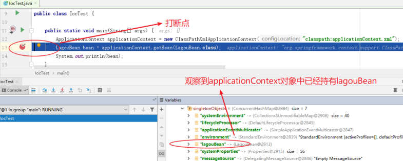
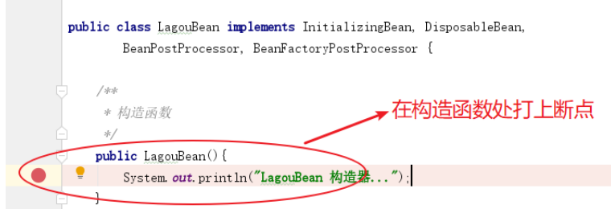
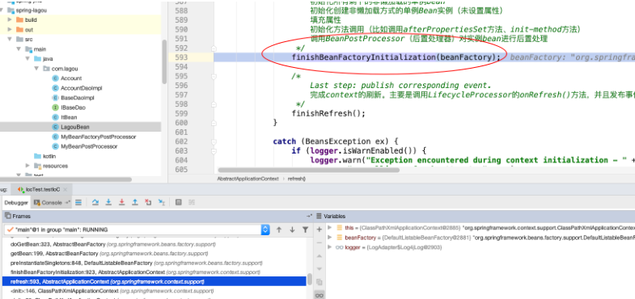
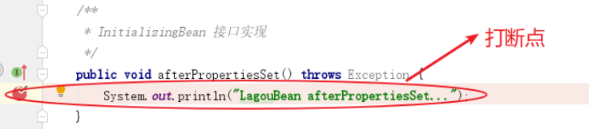
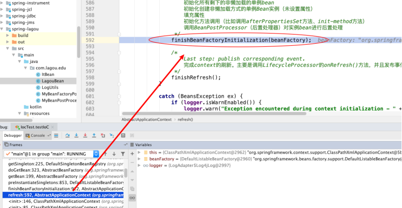
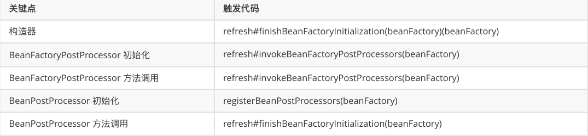

<!DOCTYPE html>


<html lang="zh-Hans">
  

    <head>
      <meta charset="utf-8" />
        
      <meta name="description" content="Technical output and problem solving record" />
      
      <meta
        name="viewport"
        content="width=device-width, initial-scale=1, maximum-scale=1"
      />
      <title>Spring源码之IOC容器初始化主体流程 |  Tunan`s Blog</title>
  <meta name="generator" content="hexo-theme-ayer">
      
      <link rel="shortcut icon" href="/favicon.ico" />
       
<link rel="stylesheet" href="/dist/main.css">

      <link
        rel="stylesheet"
        href="https://cdn.jsdelivr.net/gh/Shen-Yu/cdn/css/remixicon.min.css"
      />
      
<link rel="stylesheet" href="/css/custom.css">
 
      <script src="https://cdn.jsdelivr.net/npm/pace-js@1.0.2/pace.min.js"></script>
       
 

      <link
        rel="stylesheet"
        href="https://cdn.jsdelivr.net/npm/@sweetalert2/theme-bulma@5.0.1/bulma.min.css"
      />
      <script src="https://cdn.jsdelivr.net/npm/sweetalert2@11.0.19/dist/sweetalert2.min.js"></script>

      <!-- mermaid -->
      
      <style>
        .swal2-styled.swal2-confirm {
          font-size: 1.6rem;
        }
      </style>
    </head>
  </html>
</html>


<body>
  <div id="app">
    
      
    <main class="content on">
      <section class="outer">
  <article
  id="post-Spring源码之IOC容器初始化主体流程"
  class="article article-type-post"
  itemscope
  itemprop="blogPost"
  data-scroll-reveal
>
  <div class="article-inner">
    
    <header class="article-header">
       
<h1 class="article-title sea-center" style="border-left:0" itemprop="name">
  Spring源码之IOC容器初始化主体流程
</h1>
 

      
    </header>
     
    <div class="article-meta">
      <a href="/2022/03/19/Spring%E6%BA%90%E7%A0%81%E4%B9%8BIOC%E5%AE%B9%E5%99%A8%E5%88%9D%E5%A7%8B%E5%8C%96%E4%B8%BB%E4%BD%93%E6%B5%81%E7%A8%8B/" class="article-date">
  <time datetime="2022-03-19T06:48:53.000Z" itemprop="datePublished">2022-03-19</time>
</a> 
  <div class="article-category">
    <a class="article-category-link" href="/categories/%E6%BA%90%E7%A0%81%E5%89%96%E6%9E%90/">源码剖析</a>
  </div>
  
<div class="word_count">
    <span class="post-time">
        <span class="post-meta-item-icon">
            <i class="ri-quill-pen-line"></i>
            <span class="post-meta-item-text"> Word count:</span>
            <span class="post-count">1.5k</span>
        </span>
    </span>

    <span class="post-time">
        &nbsp; | &nbsp;
        <span class="post-meta-item-icon">
            <i class="ri-book-open-line"></i>
            <span class="post-meta-item-text"> Reading time≈</span>
            <span class="post-count">6 min</span>
        </span>
    </span>
</div>
 
    </div>
      
    <div class="tocbot"></div>


  
    <div class="article-entry" itemprop="articleBody">
       
  <h1 id="分析Spring源码"><a href="#分析Spring源码" class="headerlink" title="分析Spring源码"></a>分析Spring源码</h1><ul>
<li>好处：提⾼培养代码架构思维、深⼊理解框架</li>
<li>原则<ul>
<li>定焦原则：抓主线</li>
<li>宏观原则：站在上帝视⻆，关注源码结构和业务流程（淡化具体某⾏代码的编写细节）</li>
</ul>
</li>
<li>读源码的⽅法和技巧<ul>
<li>断点（观察调⽤栈）<span id="more"></span></li>
<li>反调（Find Usages）</li>
<li>经验（spring框架中doXXX，做具体处理的地⽅）</li>
</ul>
</li>
<li>Spring源码构建<ul>
<li>下载源码（github）</li>
<li>安装gradle 5.6.3（类似于maven） Idea 2019.1 Jdk 11.0.5</li>
<li>导⼊（耗费⼀定时间）</li>
<li>编译⼯程（顺序：core-oxm-context-beans-aspects-aop）</li>
<li>⼯程—&gt;tasks—&gt;compileTestJava</li>
</ul>
</li>
</ul>
<h1 id="Spring-IoC容器初始化主体流程"><a href="#Spring-IoC容器初始化主体流程" class="headerlink" title="Spring IoC容器初始化主体流程"></a>Spring IoC容器初始化主体流程</h1><h2 id="Spring-IoC的容器体系"><a href="#Spring-IoC的容器体系" class="headerlink" title="Spring IoC的容器体系"></a>Spring IoC的容器体系</h2><p>IoC容器是Spring的核⼼模块，是抽象了对象管理、依赖关系管理的框架解决⽅案。Spring 提供了很多的容器，其中 BeanFactory 是顶层容器（根容器），不能被实例化，它定义了所有 IoC 容器 必须遵从的⼀套原则，具体的容器实现可以增加额外的功能，⽐如我们常⽤到的ApplicationContext，其下更具体的实现如 ClassPathXmlApplicationContext 包含了解析 xml 等⼀系列的内容，</p>
<p>AnnotationConfigApplicationContext 则是包含了注解解析等⼀系列的内容。Spring IoC 容器继承体系⾮常聪明，需要使⽤哪个层次⽤哪个层次即可，不必使⽤功能⼤⽽全的。</p>
<p>BeanFactory 顶级接⼝⽅法栈如下</p>
<p></p>
<p>BeanFactory 容器继承体系</p>
<p></p>
<p>通过其接⼝设计，我们可以看到我们⼀贯使⽤的 ApplicationContext 除了继承BeanFactory的⼦接⼝，还继承了ResourceLoader、MessageSource等接⼝，因此其提供的功能也就更丰富了。</p>
<p>下⾯我们以 ClasspathXmlApplicationContext 为例，深⼊源码说明 IoC 容器的初始化流程。</p>
<h2 id="Bean⽣命周期关键时机点"><a href="#Bean⽣命周期关键时机点" class="headerlink" title="Bean⽣命周期关键时机点"></a>Bean⽣命周期关键时机点</h2><p><strong>思路</strong>：创建⼀个类 LagouBean ，让其实现⼏个特殊的接⼝，并分别在接⼝实现的构造器、接⼝⽅法中断点，观察线程调⽤栈，分析出 Bean 对象创建和管理关键点的触发时机。</p>
<p>LagouBean类</p>
<pre><code class="java">public class LagouBean implements InitializingBean&#123;
  /**
   * 构造函数
   */
  public LagouBean()&#123;
    System.out.println(&quot;LagouBean 构造器...&quot;);
  &#125;
  /**
   * InitializingBean 接⼝实现
   */
  public void afterPropertiesSet() throws Exception &#123;
    System.out.println(&quot;LagouBean afterPropertiesSet...&quot;);
  &#125;
&#125;
</code></pre>
<p>BeanPostProcessor 接⼝实现类</p>
<pre><code class="java">public class MyBeanPostProcessor implements BeanPostProcessor &#123;
  public MyBeanPostProcessor() &#123;
    System.out.println(&quot;BeanPostProcessor 实现类构造函数...&quot;);
  &#125;
    
  @Override
  public Object postProcessBeforeInitialization(Object bean, String beanName) throws BeansException &#123;
    if(&quot;lagouBean&quot;.equals(beanName)) &#123;
      System.out.println(&quot;BeanPostProcessor 实现类 postProcessBeforeInitialization ⽅法被调⽤中......&quot;);
    &#125;
    return bean;
  &#125;
    
  @Override
  public Object postProcessAfterInitialization(Object bean, String beanName) throws BeansException &#123;
    if(&quot;lagouBean&quot;.equals(beanName)) &#123;
      System.out.println(&quot;BeanPostProcessor 实现类 postProcessAfterInitialization ⽅法被调⽤中......&quot;);
    &#125;
    return bean;
  &#125;
&#125;
</code></pre>
<p>BeanFactoryPostProcessor 接⼝实现类</p>
<pre><code class="java">public class MyBeanFactoryPostProcessor implements BeanFactoryPostProcessor &#123;
  public MyBeanFactoryPostProcessor() &#123;
    System.out.println(&quot;BeanFactoryPostProcessor的实现类构造函数...&quot;);
  &#125;
    
  @Override
  public void postProcessBeanFactory(ConfigurableListableBeanFactory beanFactory) throws BeansException &#123;
    System.out.println(&quot;BeanFactoryPostProcessor的实现⽅法调⽤中......&quot;);
  &#125;
&#125;
</code></pre>
<p>applicationContext.xml</p>
<pre><code class="xml">&lt;?xml version=&quot;1.0&quot; encoding=&quot;UTF-8&quot;?&gt;
&lt;beans xmlns=&quot;http://www.springframework.org/schema/beans&quot;
     xmlns:xsi=&quot;http://www.w3.org/2001/XMLSchema-instance&quot;
     xsi:schemaLocation=&quot;
      http://www.springframework.org/schema/beans
        https://www.springframework.org/schema/beans/spring-beans.xsd
&quot;&gt;
  &lt;bean id=&quot;lagouBean&quot; class=&quot;com.lagou.LagouBean&quot;/&gt;
  &lt;bean id=&quot;myBeanFactoryPostProcessor&quot; 
class=&quot;com.lagou.MyBeanFactoryPostProcessor&quot;/&gt;
  &lt;bean id=&quot;myBeanPostProcessor&quot; class=&quot;com.lagou.MyBeanPostProcessor&quot;/&gt;
&lt;/beans&gt;
</code></pre>
<p>IoC 容器源码分析⽤例</p>
<pre><code class="java">/**
*  Ioc 容器源码分析基础案例
*/
@Test
public void testIoC() &#123;
  ApplicationContext applicationContext = new   ClassPathXmlApplicationContext(&quot;classpath:applicationContext.xml&quot;);
  LagouBean lagouBean = applicationContext.getBean(LagouBean.class);
  System.out.println(lagouBean);
&#125;
</code></pre>
<h3 id="1-分析-Bean-的创建是在容器初始化时还是在-getBean-时"><a href="#1-分析-Bean-的创建是在容器初始化时还是在-getBean-时" class="headerlink" title="(1)分析 Bean 的创建是在容器初始化时还是在 getBean 时"></a>(1)分析 Bean 的创建是在容器初始化时还是在 getBean 时</h3><p></p>
<p>根据断点调试，我们发现，在未设置延迟加载的前提下，Bean 的创建是在容器初始化过程中完成的。</p>
<h3 id="2-分析构造函数调⽤情况"><a href="#2-分析构造函数调⽤情况" class="headerlink" title="(2)分析构造函数调⽤情况"></a>(2)分析构造函数调⽤情况</h3><p></p>
<p></p>
<p>通过如上观察，我们发现构造函数的调⽤时机在AbstractApplicationContext类refresh⽅法的<br>finishBeanFactoryInitialization(beanFactory)处;</p>
<h3 id="3-分析-InitializingBean-之-afterPropertiesSet-初始化⽅法调⽤情况"><a href="#3-分析-InitializingBean-之-afterPropertiesSet-初始化⽅法调⽤情况" class="headerlink" title="(3)分析 InitializingBean 之 afterPropertiesSet 初始化⽅法调⽤情况"></a>(3)分析 InitializingBean 之 afterPropertiesSet 初始化⽅法调⽤情况</h3><p></p>
<p>观察调用栈</p>
<p></p>
<p>通过如上观察，我们发现 InitializingBean中afterPropertiesSet ⽅法的调⽤时机也是在<br>AbstractApplicationContext类refresh⽅法的finishBeanFactoryInitialization(beanFactory);</p>
<h3 id="4-分析BeanFactoryPostProcessor-初始化和调⽤情况"><a href="#4-分析BeanFactoryPostProcessor-初始化和调⽤情况" class="headerlink" title="(4)分析BeanFactoryPostProcessor 初始化和调⽤情况"></a>(4)分析BeanFactoryPostProcessor 初始化和调⽤情况</h3><p>分别在构造函数、postProcessBeanFactory ⽅法处打断点，观察调⽤栈，发现:</p>
<p><strong>BeanFactoryPostProcessor</strong> 初始化在AbstractApplicationContext类refresh⽅法的 invokeBeanFactoryPostProcessors(beanFactory);</p>
<p><strong>postProcessBeanFactory</strong> 调⽤在AbstractApplicationContext类refresh⽅法的 invokeBeanFactoryPostProcessors(beanFactory);</p>
<h3 id="5-分析-BeanPostProcessor-初始化和调⽤情况"><a href="#5-分析-BeanPostProcessor-初始化和调⽤情况" class="headerlink" title="(5)分析 BeanPostProcessor 初始化和调⽤情况"></a>(5)分析 BeanPostProcessor 初始化和调⽤情况</h3><p>分别在构造函数、postProcessBeanFactory ⽅法处打断点，观察调⽤栈，发现:</p>
<p><strong>BeanPostProcessor</strong> 初始化在AbstractApplicationContext类refresh⽅法的<br>registerBeanPostProcessors(beanFactory);</p>
<p><strong>postProcessBeforeInitialization</strong> 调⽤在AbstractApplicationContext类refresh⽅法的<br>finishBeanFactoryInitialization(beanFactory);</p>
<p><strong>postProcessAfterInitialization</strong> 调⽤在AbstractApplicationContext类refresh⽅法的<br>finishBeanFactoryInitialization(beanFactory);</p>
<h3 id="6-总结"><a href="#6-总结" class="headerlink" title="(6)总结"></a>(6)总结</h3><p>根据上⾯的调试分析，我们发现 Bean对象创建的⼏个关键时机点代码层级的调⽤都在 AbstractApplicationContext 类 的 refresh ⽅法中，可⻅这个⽅法对于Spring IoC 容器初始化来说相当关键，汇总如下：</p>
<p></p>
<h2 id="Spring-IoC容器初始化主流程"><a href="#Spring-IoC容器初始化主流程" class="headerlink" title="Spring IoC容器初始化主流程"></a>Spring IoC容器初始化主流程</h2><p>由上分析可知，Spring IoC 容器初始化的关键环节就在 AbstractApplicationContext#refresh() ⽅法中，我们查看 refresh ⽅法来俯瞰容器创建的主体流程，主体流程下的具体⼦流程我们后⾯再来讨论。</p>
<pre><code class="java">@Override
public void refresh() throws BeansException, IllegalStateException &#123;
    synchronized (this.startupShutdownMonitor) &#123;
        // 第⼀步：刷新前的预处理
        prepareRefresh();
        /*
       第⼆步：
       获取BeanFactory；默认实现是DefaultListableBeanFactory
           加载BeanDefition 并注册到 BeanDefitionRegistry
        */
        ConfigurableListableBeanFactory beanFactory = obtainFreshBeanFactory();
        // 第三步：BeanFactory的预准备⼯作（BeanFactory进⾏⼀些设置，⽐如context的类加载器等）
        prepareBeanFactory(beanFactory);
        try &#123;
            // 第四步：BeanFactory准备⼯作完成后进⾏的后置处理⼯作
            postProcessBeanFactory(beanFactory);
            // 第五步：实例化并调⽤实现了BeanFactoryPostProcessor接⼝的Bean
            invokeBeanFactoryPostProcessors(beanFactory);
            // 第六步：注册BeanPostProcessor（Bean的后置处理器），在创建bean的前后等执⾏
            registerBeanPostProcessors(beanFactory);
            // 第七步：初始化MessageSource组件（做国际化功能；消息绑定，消息解析）；
            initMessageSource();
            // 第⼋步：初始化事件派发器
            initApplicationEventMulticaster();
            // 第九步：⼦类重写这个⽅法，在容器刷新的时候可以⾃定义逻辑
            onRefresh();
            // 第⼗步：注册应⽤的监听器。就是注册实现了ApplicationListener接⼝的监听器bean
            registerListeners();
            /*
        第⼗⼀步：
        初始化所有剩下的⾮懒加载的单例bean
        初始化创建⾮懒加载⽅式的单例Bean实例（未设置属性）
                填充属性
                初始化⽅法调⽤（⽐如调⽤afterPropertiesSet⽅法、init-method⽅法）
                调⽤BeanPostProcessor（后置处理器）对实例bean进⾏后置处
      */
            finishBeanFactoryInitialization(beanFactory);
            /*
        第⼗⼆步：
        完成context的刷新。主要是调⽤LifecycleProcessor的onRefresh()⽅法，并且发布事件               （ContextRefreshedEvent）
      */
            finishRefresh();
        &#125;
                ......
    &#125;
&#125;
</code></pre>
 
      <!-- reward -->
      
    </div>
    

    <!-- copyright -->
    
    <div class="declare">
      <ul class="post-copyright">
        <li>
          <i class="ri-copyright-line"></i>
          <strong>Copyright： </strong>
          
          Copyright is owned by the author. For commercial reprints, please contact the author for authorization. For non-commercial reprints, please indicate the source.
          
        </li>
      </ul>
    </div>
    
    <footer class="article-footer">
       
<div class="share-btn">
      <span class="share-sns share-outer">
        <i class="ri-share-forward-line"></i>
        分享
      </span>
      <div class="share-wrap">
        <i class="arrow"></i>
        <div class="share-icons">
          
          <a class="weibo share-sns" href="javascript:;" data-type="weibo">
            <i class="ri-weibo-fill"></i>
          </a>
          <a class="weixin share-sns wxFab" href="javascript:;" data-type="weixin">
            <i class="ri-wechat-fill"></i>
          </a>
          <a class="qq share-sns" href="javascript:;" data-type="qq">
            <i class="ri-qq-fill"></i>
          </a>
          <a class="douban share-sns" href="javascript:;" data-type="douban">
            <i class="ri-douban-line"></i>
          </a>
          <!-- <a class="qzone share-sns" href="javascript:;" data-type="qzone">
            <i class="icon icon-qzone"></i>
          </a> -->
          
          <a class="facebook share-sns" href="javascript:;" data-type="facebook">
            <i class="ri-facebook-circle-fill"></i>
          </a>
          <a class="twitter share-sns" href="javascript:;" data-type="twitter">
            <i class="ri-twitter-fill"></i>
          </a>
          <a class="google share-sns" href="javascript:;" data-type="google">
            <i class="ri-google-fill"></i>
          </a>
        </div>
      </div>
</div>

<div class="wx-share-modal">
    <a class="modal-close" href="javascript:;"><i class="ri-close-circle-line"></i></a>
    <p>扫一扫，分享到微信</p>
    <div class="wx-qrcode">
      
    </div>
</div>

<div id="share-mask"></div>  
  <ul class="article-tag-list" itemprop="keywords"><li class="article-tag-list-item"><a class="article-tag-list-link" href="/tags/Spring/" rel="tag">Spring</a></li></ul>

    </footer>
  </div>

   
  <nav class="article-nav">
    
      <a href="/2022/03/19/Spring%E6%BA%90%E7%A0%81%E4%B9%8BBeanFactory%E5%88%9B%E5%BB%BA%E6%B5%81%E7%A8%8B/" class="article-nav-link">
        <strong class="article-nav-caption">上一篇</strong>
        <div class="article-nav-title">
          
            Spring源码之BeanFactory创建流程
          
        </div>
      </a>
    
    
      <a href="/2022/03/19/Spring-IoC-%E7%9A%84%E9%AB%98%E7%BA%A7%E7%89%B9%E6%80%A7/" class="article-nav-link">
        <strong class="article-nav-caption">下一篇</strong>
        <div class="article-nav-title">Spring IoC 的高级特性</div>
      </a>
    
  </nav>

   
<!-- valine评论 -->
<div id="vcomments-box">
  <div id="vcomments"></div>
</div>
<script src="//cdn1.lncld.net/static/js/3.0.4/av-min.js"></script>
<script src="https://cdn.jsdelivr.net/npm/valine@1.4.14/dist/Valine.min.js"></script>
<script>
  new Valine({
    el: "#vcomments",
    app_id: "",
    app_key: "",
    path: window.location.pathname,
    avatar: "monsterid",
    placeholder: "给我的文章加点评论吧~",
    recordIP: true,
  });
  const infoEle = document.querySelector("#vcomments .info");
  if (infoEle && infoEle.childNodes && infoEle.childNodes.length > 0) {
    infoEle.childNodes.forEach(function (item) {
      item.parentNode.removeChild(item);
    });
  }
</script>
<style>
  #vcomments-box {
    padding: 5px 30px;
  }

  @media screen and (max-width: 800px) {
    #vcomments-box {
      padding: 5px 0px;
    }
  }

  #vcomments-box #vcomments {
    background-color: #fff;
  }

  .v .vlist .vcard .vh {
    padding-right: 20px;
  }

  .v .vlist .vcard {
    padding-left: 10px;
  }
</style>

 
   
     
</article>

</section>
      <footer class="footer">
  <div class="outer">
    <ul>
      <li>
        Copyrights &copy;
        2018-2022
        <i class="ri-heart-fill heart_icon"></i> Tunan
      </li>
    </ul>
    <ul>
      <li>
        
      </li>
    </ul>
    <ul>
      <li>
        
        
        <span>
  <span><i class="ri-user-3-fill"></i>Visitors:<span id="busuanzi_value_site_uv"></span></span>
  <span class="division">|</span>
  <span><i class="ri-eye-fill"></i>Views:<span id="busuanzi_value_page_pv"></span></span>
</span>
        
      </li>
    </ul>
    <ul>
      
    </ul>
    <ul>
      
    </ul>
    <ul>
      <li>
        <!-- cnzz统计 -->
        
        <script type="text/javascript" src='https://s9.cnzz.com/z_stat.php?id=1278069914&amp;web_id=1278069914'></script>
        
      </li>
    </ul>
  </div>
</footer>    
    </main>
    <div class="float_btns">
      <div class="totop" id="totop">
  <i class="ri-arrow-up-line"></i>
</div>

<div class="todark" id="todark">
  <i class="ri-moon-line"></i>
</div>

    </div>
    <aside class="sidebar on">
      <button class="navbar-toggle"></button>
<nav class="navbar">
  
  <div class="logo">
    <a href="/"></a>
  </div>
  
  <ul class="nav nav-main">
    
    <li class="nav-item">
      <a class="nav-item-link" href="/">主页</a>
    </li>
    
    <li class="nav-item">
      <a class="nav-item-link" href="/archives">归档</a>
    </li>
    
    <li class="nav-item">
      <a class="nav-item-link" href="/categories">分类</a>
    </li>
    
    <li class="nav-item">
      <a class="nav-item-link" href="/tags">标签</a>
    </li>
    
    <li class="nav-item">
      <a class="nav-item-link" href="/tags/share">分享</a>
    </li>
    
    <li class="nav-item">
      <a class="nav-item-link" target="_blank" rel="noopener" href="https://blog.csdn.net/North_City_">CSDN</a>
    </li>
    
  </ul>
</nav>
<nav class="navbar navbar-bottom">
  <ul class="nav">
    <li class="nav-item">
      
      <a class="nav-item-link nav-item-search"  title="Search">
        <i class="ri-search-line"></i>
      </a>
      
      
      <a class="nav-item-link" target="_blank" href="/atom.xml" title="RSS Feed">
        <i class="ri-rss-line"></i>
      </a>
      
    </li>
  </ul>
</nav>
<div class="search-form-wrap">
  <div class="local-search local-search-plugin">
  <input type="search" id="local-search-input" class="local-search-input" placeholder="Search...">
  <div id="local-search-result" class="local-search-result"></div>
</div>
</div>
    </aside>
    <div id="mask"></div>

<!-- #reward -->
<div id="reward">
  <span class="close"><i class="ri-close-line"></i></span>
  <p class="reward-p"><i class="ri-cup-line"></i>请我喝杯咖啡吧~</p>
  <div class="reward-box">
    
    <div class="reward-item">
      
      <span class="reward-type">支付宝</span>
    </div>
    
    
    <div class="reward-item">
      
      <span class="reward-type">微信</span>
    </div>
    
  </div>
</div>
    
<script src="/js/jquery-3.6.0.min.js"></script>
 
<script src="/js/lazyload.min.js"></script>

<!-- Tocbot -->
 
<script src="/js/tocbot.min.js"></script>

<script>
  tocbot.init({
    tocSelector: ".tocbot",
    contentSelector: ".article-entry",
    headingSelector: "h1, h2, h3, h4, h5, h6",
    hasInnerContainers: true,
    scrollSmooth: true,
    scrollContainer: "main",
    positionFixedSelector: ".tocbot",
    positionFixedClass: "is-position-fixed",
    fixedSidebarOffset: "auto",
  });
</script>

<script src="https://cdn.jsdelivr.net/npm/jquery-modal@0.9.2/jquery.modal.min.js"></script>
<link
  rel="stylesheet"
  href="https://cdn.jsdelivr.net/npm/jquery-modal@0.9.2/jquery.modal.min.css"
/>
<script src="https://cdn.jsdelivr.net/npm/justifiedGallery@3.7.0/dist/js/jquery.justifiedGallery.min.js"></script>

<script src="/dist/main.js"></script>

<!-- ImageViewer -->
 <!-- Root element of PhotoSwipe. Must have class pswp. -->
<div class="pswp" tabindex="-1" role="dialog" aria-hidden="true">

    <!-- Background of PhotoSwipe. 
         It's a separate element as animating opacity is faster than rgba(). -->
    <div class="pswp__bg"></div>

    <!-- Slides wrapper with overflow:hidden. -->
    <div class="pswp__scroll-wrap">

        <!-- Container that holds slides. 
            PhotoSwipe keeps only 3 of them in the DOM to save memory.
            Don't modify these 3 pswp__item elements, data is added later on. -->
        <div class="pswp__container">
            <div class="pswp__item"></div>
            <div class="pswp__item"></div>
            <div class="pswp__item"></div>
        </div>

        <!-- Default (PhotoSwipeUI_Default) interface on top of sliding area. Can be changed. -->
        <div class="pswp__ui pswp__ui--hidden">

            <div class="pswp__top-bar">

                <!--  Controls are self-explanatory. Order can be changed. -->

                <div class="pswp__counter"></div>

                <button class="pswp__button pswp__button--close" title="Close (Esc)"></button>

                <button class="pswp__button pswp__button--share" style="display:none" title="Share"></button>

                <button class="pswp__button pswp__button--fs" title="Toggle fullscreen"></button>

                <button class="pswp__button pswp__button--zoom" title="Zoom in/out"></button>

                <!-- Preloader demo http://codepen.io/dimsemenov/pen/yyBWoR -->
                <!-- element will get class pswp__preloader--active when preloader is running -->
                <div class="pswp__preloader">
                    <div class="pswp__preloader__icn">
                        <div class="pswp__preloader__cut">
                            <div class="pswp__preloader__donut"></div>
                        </div>
                    </div>
                </div>
            </div>

            <div class="pswp__share-modal pswp__share-modal--hidden pswp__single-tap">
                <div class="pswp__share-tooltip"></div>
            </div>

            <button class="pswp__button pswp__button--arrow--left" title="Previous (arrow left)">
            </button>

            <button class="pswp__button pswp__button--arrow--right" title="Next (arrow right)">
            </button>

            <div class="pswp__caption">
                <div class="pswp__caption__center"></div>
            </div>

        </div>

    </div>

</div>

<link rel="stylesheet" href="https://cdn.jsdelivr.net/npm/photoswipe@4.1.3/dist/photoswipe.min.css">
<link rel="stylesheet" href="https://cdn.jsdelivr.net/npm/photoswipe@4.1.3/dist/default-skin/default-skin.min.css">
<script src="https://cdn.jsdelivr.net/npm/photoswipe@4.1.3/dist/photoswipe.min.js"></script>
<script src="https://cdn.jsdelivr.net/npm/photoswipe@4.1.3/dist/photoswipe-ui-default.min.js"></script>

<script>
    function viewer_init() {
        let pswpElement = document.querySelectorAll('.pswp')[0];
        let $imgArr = document.querySelectorAll(('.article-entry img:not(.reward-img)'))

        $imgArr.forEach(($em, i) => {
            $em.onclick = () => {
                // slider展开状态
                // todo: 这样不好，后面改成状态
                if (document.querySelector('.left-col.show')) return
                let items = []
                $imgArr.forEach(($em2, i2) => {
                    let img = $em2.getAttribute('data-idx', i2)
                    let src = $em2.getAttribute('data-target') || $em2.getAttribute('src')
                    let title = $em2.getAttribute('alt')
                    // 获得原图尺寸
                    const image = new Image()
                    image.src = src
                    items.push({
                        src: src,
                        w: image.width || $em2.width,
                        h: image.height || $em2.height,
                        title: title
                    })
                })
                var gallery = new PhotoSwipe(pswpElement, PhotoSwipeUI_Default, items, {
                    index: parseInt(i)
                });
                gallery.init()
            }
        })
    }
    viewer_init()
</script> 
<!-- MathJax -->

<!-- Katex -->

<!-- busuanzi  -->
 
<script src="/js/busuanzi-2.3.pure.min.js"></script>
 
<!-- ClickLove -->

<!-- ClickBoom1 -->

<!-- ClickBoom2 -->

<!-- CodeCopy -->
 
<link rel="stylesheet" href="/css/clipboard.css">
 <script src="https://cdn.jsdelivr.net/npm/clipboard@2/dist/clipboard.min.js"></script>
<script>
  function wait(callback, seconds) {
    var timelag = null;
    timelag = window.setTimeout(callback, seconds);
  }
  !function (e, t, a) {
    var initCopyCode = function(){
      var copyHtml = '';
      copyHtml += '<button class="btn-copy" data-clipboard-snippet="">';
      copyHtml += '<i class="ri-file-copy-2-line"></i><span>COPY</span>';
      copyHtml += '</button>';
      $(".highlight .code pre").before(copyHtml);
      $(".article pre code").before(copyHtml);
      var clipboard = new ClipboardJS('.btn-copy', {
        target: function(trigger) {
          return trigger.nextElementSibling;
        }
      });
      clipboard.on('success', function(e) {
        let $btn = $(e.trigger);
        $btn.addClass('copied');
        let $icon = $($btn.find('i'));
        $icon.removeClass('ri-file-copy-2-line');
        $icon.addClass('ri-checkbox-circle-line');
        let $span = $($btn.find('span'));
        $span[0].innerText = 'COPIED';
        
        wait(function () { // 等待两秒钟后恢复
          $icon.removeClass('ri-checkbox-circle-line');
          $icon.addClass('ri-file-copy-2-line');
          $span[0].innerText = 'COPY';
        }, 2000);
      });
      clipboard.on('error', function(e) {
        e.clearSelection();
        let $btn = $(e.trigger);
        $btn.addClass('copy-failed');
        let $icon = $($btn.find('i'));
        $icon.removeClass('ri-file-copy-2-line');
        $icon.addClass('ri-time-line');
        let $span = $($btn.find('span'));
        $span[0].innerText = 'COPY FAILED';
        
        wait(function () { // 等待两秒钟后恢复
          $icon.removeClass('ri-time-line');
          $icon.addClass('ri-file-copy-2-line');
          $span[0].innerText = 'COPY';
        }, 2000);
      });
    }
    initCopyCode();
  }(window, document);
</script>
 
<!-- CanvasBackground -->

<script>
  if (window.mermaid) {
    mermaid.initialize({ theme: "forest" });
  }
</script>


    
    

  </div>
</body>

</html>